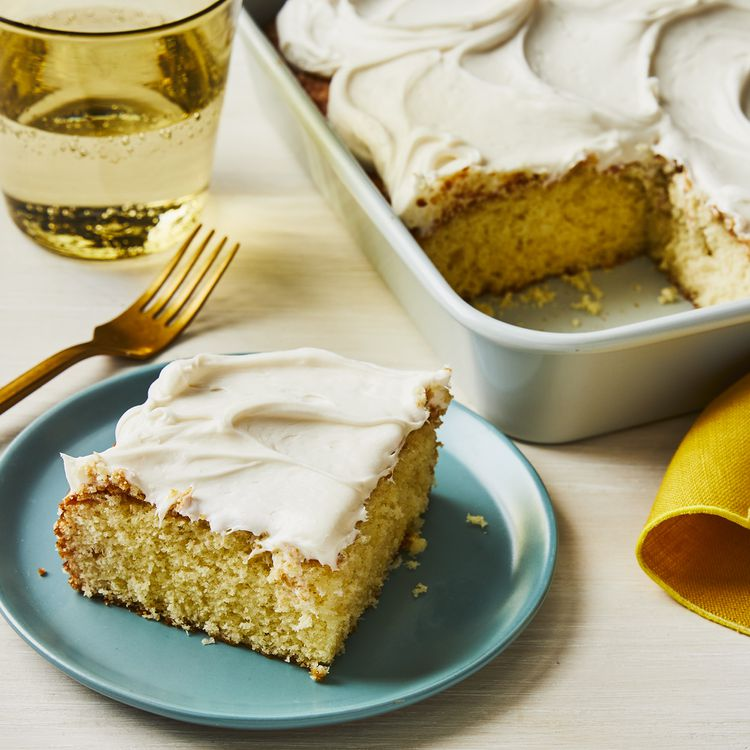

Simple White Cake
This simple cake recipe was sent home from our children's school. It is the easiest, best-tasting cake I've ever made. It's great to make with the kids, especially for cupcakes. Use your favorite frosting on top of this delicious cake

Ingredients
Dry Ingredients
- 1 cup white sugar
- ½ cup unsalted butter
- 2 large eggs
- 2 teaspoons vanilla extract
- 1 ½ cups all-purpose flour
- 1 ¾ teaspoons baking powder
- ½ cup milk
Directions
- Preheat the oven to 350 degrees F (175 degrees C). Grease and flour a 9-inch square cake pan.
- Cream sugar and butter together in a mixing bowl. Add eggs, one at a time, beating briefly after each addition. Mix in vanilla.
- Combine flour and baking powder in a separate bowl. Add to the wet ingredients and mix well. Add milk and stir until smooth. Pour batter into the prepared cake pan.
- Bake in the preheated oven until the top springs back when lightly touched, 30 to 40 minutes.
- Remove from the oven and cool completely.